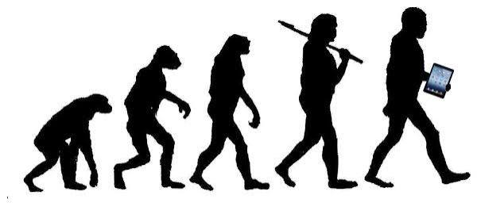

Sou DevJunior e esse é meu primeiro site em HTML e CSS, sou estudante do Curso Técnico em Informática aprendendo Desenvolvimento Web.

A Internet é uma grande rede mundial que conecta computadores, celulares, servidores e outros dispositivos. Ela permite que informações sejam enviadas e recebidas rapidamente entre diferentes lugares do mundo, possibilitando serviços como sites, redes sociais, jogos online, mensagens, vídeos e muito mais.
A Internet funciona através da conexão entre vários dispositivos e redes. Quando você acessa um site, seu computador envia uma solicitação pelo roteador, que a encaminha pela Internet até o servidor onde o site está armazenado. O servidor então envia as informações de volta para que o site seja exibido no seu dispositivo.
A Internet permite que pessoas de diferentes lugares se comuniquem, compartilhem informações e acessem diversos serviços. Ela é utilizada para estudar, trabalhar, pesquisar, assistir vídeos, jogar, fazer compras, utilizar redes sociais, realizar pagamentos e muito mais. Hoje, ela está presente em diversas atividades do nosso dia a dia.
Internet: é a grande rede mundial que conecta computadores, celulares, servidores e outros dispositivos, permitindo a troca de informações.
X
Web: é um serviço que funciona dentro da Internet e permite acessar sites e páginas da Internet por meio de navegadores, como Chrome, Edge e Firefox.
As redes sociais são plataformas da internet que permitem que as pessoas se conectem, compartilhem informações, publiquem fotos e vídeos e interajam umas com as outras. Elas fazem parte do cotidiano de milhões de pessoas e também são utilizadas por empresas, escolas, artistas e organizações.
Exemplo de redes sociais:
 Instagram
Instagram
Tiktok
 Facebook
Facebook
As redes sociais são utilizadas principalmente para comunicação e interação entre pessoas. Elas permitem enviar mensagens, compartilhar fotos e vídeos, acompanhar notícias, conhecer novas pessoas e participar de comunidades. Também podem ser usadas por empresas, artistas e criadores de conteúdo para divulgar produtos, serviços e trabalhos.
Ao utilizar redes sociais, é importante ter cuidado com as informações compartilhadas. Dados pessoais, senhas e informações privadas não devem ser divulgados publicamente. Também é importante desconfiar de links e mensagens suspeitas, evitar conversar com pessoas desconhecidas e verificar se uma notícia é verdadeira antes de compartilhá-la. Dessa forma, é possível aproveitar as redes sociais com mais segurança e responsabilidade.
As redes sociais dependem da Internet para conectar pessoas de diferentes lugares. Quando alguém publica uma foto, envia uma mensagem ou assiste a um vídeo, os dados são enviados pela Internet até os servidores da rede social e depois chegam ao dispositivo de outros usuários. Dessa forma, a Internet permite que as redes sociais funcionem e possibilitem a comunicação e o compartilhamento de informações em tempo real.

A Internet passou por muitas mudanças desde sua criação. No início, ela era utilizada principalmente por universidades, pesquisadores e órgãos governamentais para trocar informações. Com o passar dos anos, novas tecnologias fizeram com que a Internet se tornasse mais rápida, acessível e popular.
Na década de 1990, a World Wide Web (Web) começou a se popularizar, permitindo que as pessoas acessassem páginas e informações de forma muito mais simples. Depois, surgiram os sites, buscadores, redes sociais, serviços de streaming e aplicativos, transformando a Internet em uma parte importante do nosso dia a dia.
Hoje, podemos acessar a Internet pelo computador, celular, televisão, videogame e até por dispositivos inteligentes. Ela é utilizada para estudar, trabalhar, conversar, assistir vídeos, pesquisar informações, fazer compras e se divertir.

© 2026 - Desenvolvido na aula de Web.